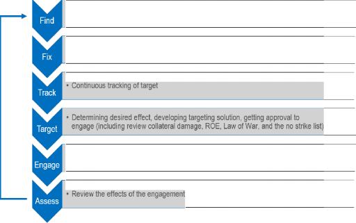

“关注”2017年11月第2号报告
国际管制自主武器小组（iPRAW）由以下机构协调：
Stiftung Wissenschaft und Politik - 德国国际与安全事务研究所Ludwigkirchplatz 3-4
德国柏林10179
2017年11月
这个项目得到了德国联邦外交部的资助。
设定和目标：国际自主武器管理委员会（iPRAW）成立于2017年3月。iPRAW是来自不同国家和科学背景的独立专家组。该小组将于2018年底前完成其工作。
iPRAW的使命是在联合国“特定常规武器公约”（“禁止或限制使用某些可被认为可能被视为”禁止或限制使用某些常规武器公约“）的框架内向政府专家组提供独立的信息和咨询来源过度伤害或有滥杀滥伤作用）期间，可能对法律（致命自主武器系统）进行未来监管。这项工作包括但不限于在军事，技术，法律和道德方面提供有关LAWS的实际可行的政策举措方面的专业知识。CCW关于LAWS的开放式GGE的任务授权将指导iPRAW的工作。
IPRAW力求做好准备，支持，并促进参与者之间的坦诚和富有成效的交流，对法律的CCW专家组的潜在监管工作定义和建议，最终的观点。iPRAW是独立于GGE的，并且在CCW方面没有任何官方职能。
资金，组织和参与者：iPRAW由德国联邦外交部提供财政支持。iPRAW的观点和发现并不反映德国政府或任何其他政府的官方立场。Stiftung Wissenschaft und Politik - 德国国际与安全事务研究所（SWP）和约翰霍普金斯大学应用物理实验室（JHU APL）正在联合组织这个小组。参与者是根据他们的专业知识和他们从广泛的专业和区域背景带来的观点选定的。iPRAW代表了武器系统自主权观点的多样性。其成员具有自然科学，工程，法律，道德，政治科学和军事运行分析的背景。
范围：专家组承认，LAWS可能会带来很多相当大的法律，道德和操作挑战，并且可能会从根本上改变安全环境。这些武器系统的全部潜力尚不清楚，并且不存在关于LAWS的共同商定的定义。
为了支持CCW GGE过程，iPRAW将致力于如何定义LAWS以及如何建议可能的监管方法。小组的工作会议将涵盖以下主题
技术和操作状况以及现行的LAWS定义
LAWS范围内的计算系统
自治和人类控制
道德，规范和公众的看法
风险和机会
国际人道法和其他法律领域。
iPRAW将发布有关这些主题的工作文件，并且还将公布专家组的最终建议，旨在通报CCW流程。
程序：与会者承诺积极参与会议之间的所有会议和科学对话并为之作出贡献。该小组将在2017年3月开始的两年中共七次会议。每次会议将需要两天半的时间，并将由SWP在柏林主持。会议上将通过项目网站（www.ipraw.org）起草并发布有关相关问题的商定建议的论文。
通讯和出版：与会Chatham House规则下讨论：参与者可以自由使用收到的信息，但无论是身份还是扬声器（S的隶属关系，），也不是任何其他参与者，可显露出来。作为保密事项，iPRAW会议期间不允许拍摄照片，录像或录音以及社交媒体上的各种活动。
小组讨论的结果将公布。iPRAW成员将努力就其建议达成共识，并在小组的出版物中反映这一点。有关官方iPRAW职位的媒体查询应直接提交给指导小组。除此之外，小组成员可以自由谈论他们对参与和小组讨论主题的个人看法。
了解更多关于IPRAW及其研究课题上 www.ipraw.org 。请将您的问题和有关该项目的意见发送到 mail@ipraw.org 。
国际自主武器管理小组（iPRAW）是一个独立的跨学科小组，致力于研究致命的自主武器系统（LAWS）问题。它旨在支持目前关于“联合国特定常规武器公约”（CCW）辩论的科学依据，并为法律的潜在管理提供建议。定义法律是CCW辩论的关键要素，也是iPRAW使命的重要组成部分。
iPRAW发布中期报告，每个报告都侧重于法律的不同方面或观点。本报告重点介绍通常称为人工智能（AI）背后的基本技术，以及它们与如何相关
法律。根据报告中所述的观察结果，iPRAW
对法律的潜在管理方面作出以下结论：
结论1：一般而言，适用于LAWS的“Al”总括术语应谨慎小心。就实际能力和潜力进行实质性讨论
由于计算方法的固有局限性，人类决策者的独特判断不能被替代。
在LAWS的背景下考虑的技术，我们建议采用术语 “ 计算方法”。只要有可能，应该将具体的方法或应用的方法类型透明化，以帮助对“Al”这个术语进行神秘化，并清楚地表明实际上正在考虑哪些功能或功能。通过这种方式，讨论可以集中讨论特定功能的具体承诺和限制。
结论2：我们的讨论显示了军事领域中计算方法的局限性，并强调它们可能无法取代人类决策者的独特判断。任何复杂的计算系统都由模块化的子系统组成，每个子系统固有地具有局限性和故障点。在目标周期的每个步骤中应用多个计算系统可能会导致累积失败，这可能是灾难性的并且很难预测。任何执行顺序过程的系统，如选择和参与目标，
可能会受到路径依赖性的影响，任何步骤中的错误或决策都可能在整个序列的其余部分传播和混响。
结论3：由于两个原因，利用计算方法的系统的可预测性是矛盾的。首先，计算方法能够产生一致的结果，但这并不意味着系统在所有条件下都是健壮的。第二，它们在战术层面造成了一个悖论，因为指挥官需要在操作，法律和道德方面有一定程度的合理可预测性，但同样的系统可预测性很容易被狡猾的对手利用。能够利用训练数据或充分了解LAWS如何对特定输入做出响应的对手可能会以计算系统特有的方式欺骗这些系统，这就是为什么他们会引入新的漏洞。
结论4：在预防原则要求行为者采取措施防止危害。正如我们迄今的结论所表明的那样，关于如何应用武器的计算方法将解决人类目前必须考虑的任何数量的变量都存在不确定性。因此，鉴于目标周期每一步可能出现的这些不确定性以及由此产生的累积误差，LAWS引入了遵守预防原则的新风险。
这些结论使我们对法律的潜在管理提出以下建议：
环境中的不确定性数量和法律必须处理的问题是否可以将导致致命武力的“决定”（或在多大程度上）授予法律。任何法规都应该仔细考虑可以委托哪些决策以及如何通过设计实施人员控制。
与授权问题有关的是，一项潜在的管理法规应当责成指挥官对其实施的系统进行适当的预先考虑，对系统和任务设置适当的界限，并在任务期间进行有意义的监督。这些限制应该基于环境的复杂性和系统的性能特点。
非确定性/概率性技术的结果挑战了对机器行为的直接预测。因此，任何潜在的监管应该集中于这些技术和方法的内在局限性，以便确定人类操作员参与决策过程所必需的环境。
未来的iPRAW报告将继续按照这些考虑事项审查法律。
国际自主武器管理小组（iPRAW）是一个独立的跨学科小组，专门研究机器人技术问题和致命的自主武器系统（LAWS）。它旨在支持目前关于联合国“某些公约”的辩论
传统武器（CCW）1具有科学依据
信息和建议，从不同角度审视法律的潜在管理。iPRAW参与者的各种背景和专业知识可以对军事优势，技术边界和人机交互有不同的观点。iPRAW努力以协商一致的方式提出调查结果，但如有必要，我们将重点介绍成员之间的主要辩论。
本报告着重于法律背后的技术，尽管“Al”和自治紧密相关，但我们将在即将发布的报告（2018年3月）中研究自治的概念和术语。
本报告着眼于自主武器系统背后的计算方法，通常称为人工智能（AI）。它旨在澄清关于LAWS辩论中常用的术语，并将其置于军事动态目标决策的背景下来分析其含义。
该报告简要介绍了技术基础知识，重点介绍了有监督和无监督机器学习以及这些技术固有的挑战。它在评估军事目标周期内的影响。它说明了计算方法可以用于目标周期的每个步骤，但需要一个消息灵通的人为操作符来符合国际人道法的结果。报告总结了四点意见：
完整标题为“禁止或限制使用某些可被认为具有过分伤害力或滥杀滥伤作用的常规武器公约”， 1980年缔结，1983年生效。
术语“计算方法”在关于LAWS的讨论中比术语人工智能更合适;
跨目标周期应用多个计算系统可能会导致累积失败，这可能是灾难性的并且很难预测;
一个可预测的系统对于遵守国际人道法是必要的，但是降低了鲁棒性并增加了操纵的脆弱性;
鉴于目标周期每一步可能出现的不确定性以及由此产生的累积误差，LAWS引入了遵守预防原则的新风险。
因此，iPRAW建议对法律进行潜在的管理应该：
仔细考虑可以授予什么样的决定以及如何通过设计实施人员控制;
责成指挥官对其正在进行的系统做些适当的预先考虑，在系统和任务上设置适当的界限，并在任务期间进行有意义的监督;
注重这些技术和方法的固有局限性，以便确定人类操作员参与决策过程所必需的环境。
“公约”成员国将于2017年11月13日至17日首次在日内瓦联合国正式举行会议。这次会议标志着经过三年非正式会议后的正式审议进程的开始。由于这些会议的先前审议围绕着技术和自治的概念进行了围绕，由于民间应用的普及，艾尔现在成为公众关注的中心。因此，阐明和正确理解术语人工智能一词和法律语境是至关重要的。
术语“人工智能”已经成为在技术意义上用来指代一组计算技术的全面术语。它也被用在更通俗的意义上，指的是假设的实体或未来的计算系统，其接近或超过人类智能，或者具有与人类智能相关的一些属性。在这个口语意义上它是
有时与一般的Al，强烈的Al或者同义词使用
人类层面的Al，并讨论了“奇点”的特征。从技术意义上讲，Al常常用于捕捉想象力的具体应用和技术，如机器学习，自动推理或深度学习。在专家社区内，Al指的是一种高度多样化的计算技术，这些技术与他们的学科和研究历史相关，而不是他们的计算或实用性质。
“强铝”未来可能成为现实，也可能不成现实。就目前而言，“弱铝”带来了足够的技术，道德和法律挑战，成为本报告的重点。
基本上，在Al的旗帜下使用和探索的各种技术都是数学逻辑，高级统计和其他计算技术的应用。出于这个原因，iPRAW采用术语 “ 计算方法 ” 来捕捉这些技术的广泛范围。计算方法结合正确的使能技术和硬件，主要应用于查找
模式，对输入进行分类和分类，并根据特定的目标以计算有效的方式产生充分优化的行动方案。
技术与方法
计算方法中有许多方法反映了不同的思想和技术流派。严格的术语和技术层次是无法描述的，任何实际的现实世界系统都是如此
可能涉及多种计算技术
各种级别和各种子系统中日益复杂的杂交系统。然而，在这次辩论中经常使用的几个术语需要澄清和揭示。
机器学习
机器学习（ML）指的是使用统计方法的一套广泛的计算技术。这些计算的结果是基于它们操作的数据集，而且这些数据可能会发生变化，它们是概率性的，
术语“人工智能”和“机器学习”意味着逻辑和统计方法背后的更深层意义，这可能导致对意图和目的的错误印象。因此，本报告在涉及这些技术时使用术语“计算方法”。
自然界确定性。此外，结果对这些计算操作的数据很敏感，它们被称为“学习”或自适应算法，但更好的术语将是 “ 数据驱动 ”，因为它们实际上并不像人类学习那样运作。
在ML中，有两大类技术，有监督学习和无监督学习。但是，他们确实利用数据集的统计数据，但是以不同的方式进行。2
无监督学习使用数据集等统计技术，如回归和聚类，产生简单的数学函数，代表大数据集的显着特征。回归试图找到“适合”数据系列的线条或曲线。根据给定的算法程序，聚类技术试图将数据点分组成多个集合。只有在集群之间的边界可以被视为“已知”类别的表示的意义上说，集群才是从数据集“学习”的。这些算法是无监督的，因为它们没有从算法的用户那里接收任何类别或边界或线可能位于数据中的位置的输入。
更广泛地讨论和与ML相关的是监督学习技术。在监督学习中，算法的用户必须创建专门的训练和测试数据集。该数据必须由用户针对算法标记为期望的类别。可以使用各种算法和数据结构来“学习”给定示例的标签类别。这些包括神经网络和神经网络，有许多层称为深度学习。一旦类别被“学习”，这些统计表示就可以用来分类新的例子。在训练数据集上“训练”算法并使用标签进行校正之后
2 一本关注民用应用的出版物是Ben Buchanan，Taylor Miller，
政策制定者的机器学习。它是什么以及为什么重要，2017年6月。
或对算法进行调整，就可以针对单独的数据集对可靠性进行测试，并使用称为测试集的隐藏标签进行测试。算法在测试集上的性能可以提供算法对其训练数据的适应程度。然而，算法在更多数据或真实世界数据上的表现取决于训练和测试数据集在应用领域中的数据集的代表性。
训练好的算法在被训练后可以被“冻结”，即所谓的离线学习。这是迄今为止最常见的机器学习类型。数据用于训练，直到达到所需的测试性能水平，然后系统在其应用程序中以确定性方式运行。或者，
系统可以设计成即使在部署后也能适应
在所谓的在线学习中。这样的系统可能是不可预测和不稳定的，因为它们的性能取决于不可预测的环境数据。通常系统只使用高度受限制和受限制的方式进行在线学习，而且通常不用于关键系统。
机器学习的挑战
充足的数据是学习过程的理想结果的关键，这对培训数据的质量和数量以及代表性都具有重要价值。
机器学习技术存在许多已知的困难，挑战和问题，并且更普遍地存在统计技术。机器学习技术的一个严峻挑战是 “ 过度拟合 ”到数据的简单数学表示与数据非常接近，并且不是一般化或实际有用的数据。算法找到本地优化而不是数据内的全局优化也是一个类似的难题。例如，神经网络使用梯度下降等技术寻找数据中的最小成本点，但可能会陷入局部最小值并错过附近的全局最小值。多年的研究致力于解决这些问题，并且在取得进展的同时，仍然是系统设计师必须警惕的问题。
数据驱动技术面临的另一个挑战是获取大数据和获取良好的数据。一般来说，程序员的目标是设计这些技术以实现强大的使用。在这种情况下的稳健性描述了系统在操作期间避免不同外部条件和数据质量的独立结果的能力。由于健壮性在某些情况下可能是一个优先事项，它可能与一般意义上的可预测性相矛盾。为了获得强大的结果，机器学习算法需要大量的数据，这些数据必须精心构造; 对于监督式学习，在训练系统之前必须“手动”标记。
例如，面部识别需要许多面部图像进行训练，成千上万甚至数百万甚至中等水平的表现。识别某个人需要该人的许多图像，并且需要能够将他们的名字与那些图像相关联，即“标记的图像”。如果系统需要从不同的角度识别脸部，并且在不同的照明条件下，则需要对具有这些质量的图片进行训练。数据越多，参数越多
甲鲁棒的系统可产生尽管错误输入或执行预期的结果。关于所讨论的计算方法，实现这些结果的途径变得不太可预测。
可以变化，需要更多的数据和更多的计算时间和能力才能获得可靠的识别性能。但是，过多的培训也会导致过度学习和过度配合数据。因此，统计技术不太可能
达到完美的性能，但只对给定数据集有一定的正确概率。
也许所有类型的数据驱动机器学习技术面临的最大问题是 “ 代表性 ”用于训练，聚类和回归的数据，以及应用学习功能的实际数据。即使是最好的学习算法也不会学习有用的数学表示，如果它们被给予不好的数据或者标记不严的数据。此外，即使数据质量很高，如果数据在重要方面不能像真实世界的运营数据一样，学习功能在部署时可能会表现得非常糟糕。想象一下经过训练的神经网络对北美洲鸟类进行分类，然后尝试对南极洲的企鹅进行分类。它的大小，准确度和完整度并不重要，因为它仍然不能代表南极洲的鸟类，它对企鹅进行分类的能力将无法预测。
解决这些问题的一种方法是可解释的Al。该术语指的是人类理解（和预测）特别是隐藏在深层神经网络中的过程的挑战。可解释的Al是开发计算方法，它透明地反映，即解释隐藏在数据集及其处理中的参数和“假设”。它旨在表示能够至少最终使用人类通信形式的计算处理，而不是代码和统计参数。随着可解释铝的概念正在研究之中，这种方法很可能也会使用概括为Al的计算方法。目前还不清楚这个概念是否能够实现将机器语言和人类语言更接近的期望。
其他计算方法
大数据是数据科学中使用的一个术语，指的是使用大量数据绘制统计推断或建立统计模型的统计技术。它可以成功，因为大量数据可以帮助解决基于小数据样本的统计数据面临的一些挑战。但是这些技术基本上是一样的，同样的问题仍然会出现。
深度学习是近年来的热门话题和流行词。它指的是一套设计具有多层隐藏节点的神经网络的技术，有时甚至有数千个。大多数情况下，深度学习使用与神经网络相同的技术几十年，但在这些网络的体系结构中存在一些重要的创新，以及在训练网络中运行并行计算的硬件方面的进步，以及可用的数据来训练他们。综合起来，这些创新在相对较短的时间内导致了神经网络性能的巨大改进。尽管如此，即使这些技术的先驱者也承认这些进步可能不会继续下去，或者不断扩大，而且这样的系统在任何有意义的意义上都不能更接近“理解”世界。3
3 人工智能先驱 Steve LeVine 说我们需要重新开始， 2017年9月。
已经在民用中使用的大多数复杂计算方法都不适用于时间关键应用。他们要求计算能力，因此仅限于具有大规模（并行）处理能力的计算机。截至目前，促进这些处理的特殊硬件的生产处于早期阶段。个人电脑显卡在近年来显着推动了这一发展。虽然处理能力的增加（以及组件的小型化）可以在一定程度上外推到不久的将来，但时间关键的应用程序对于这些计算方法来说仍然是一段时间的挑战。正如他们今天正在使用的那样，它只适用于非关键任务并受到人类直接监督。
关键抽奖
术语“人工智能”和“机器学习”意味着逻辑和统计方法背后的更深层意义，这可能导致对意图和目的的错误印象。此外，决策者应该记住，在军事领域，有前途的'Al'民用应用并不一定是有希望的：平民和军队是两个截然不同的领域，不同的规则，激励结构和代理动机，即使相同或可能使用类似的技术。

非确定性的数据驱动技术最近促成了各种创新的民用应用。这是计算方法的扩散，它利用了算法（其中一些实际上存在了几年，甚至几十年），大量（手动标记的）数据以及有助于当前的GPU（图形处理单元）的计算能力公众关注这项技术整体的潜力。无论在军事还是民事方面，他们都需要对伴随风险进行全面评估。军事情景呈现出不同的优势和风险，这对于评估计算技术在法律中的应用，特别是人类行使有效监督和控制的能力，是非常重要的。尤其是，
军方预计可以利用这些计算方法的系统的开发和应用所产生的操作效用和军事优势。当沟通困难且地形艰苦或危险时，实用性和优势在于增强和补充人类能力的可能性。然而，根据定义，这两种情况都涉及将决策和行动从人类转移到机器，这些机器具有潜在的法律，操作和道德考虑。
我们通过瞄准周期的视角来研究这些考虑因素，这是一个通用术语，表示军队如何通过这一过程对敌人采用致命武力。目标周期被许多军方用于或多或少程度的形式和细节。大多数目标周期内的阶段都是切实可行的步骤，当然这些步骤在操作上是有效的。为了反映这种军事实践，iPRAW采用了美国联合动态目标周期作为促进分析的工具，其中包括以下六个步骤：查找，修复，跟踪，目标，参与和评估（F2T2EA）。
这是在iPRAW的第一次报告中介绍的，并且一直作为我们分析的框架; 可以在图1中找到详细信息。定向周期适用于目标或一组目标，并在不同步骤中通过“系统系统”执行。那就是不同的系统都以一个共同的目标来进行多个步骤。这意味着它仍然是一个评估具有多种功能和角色的系统的自治系统的相关方法，但是这些方法可以协同工作，也可以用于使用群算法和策略的系统。

在指定区域搜索符合初始标准的目标
识别，定位，优先化和分类目标
用确定和批准的武器击中目标
许多辩论都集中在这个定位周期中的“定位”和“参与”步骤上。例如，红十字国际委员会（ICRC）创造了“关键职能”一词，可以解释为重点
在这些步骤。红十字国际委员会将自主武器定义为“任何
具有关键功能的自治武器系统。也就是说，武器系统可以在没有人为干预的情况下选择（即搜索或检测，识别，跟踪，选择）和攻击（即使用武力抵抗，抵消，破坏或破坏）目标。“ 4
iPRAW同意红十字国际委员会的评估，但发现关键决策和考虑事项贯穿整个目标周期。将“选择”分为“查找”，“修复”和“跟踪”
iPRAW认为整个整个目标周期都有重要的决定和考虑因素，这可能会使军方对自主权的使用进一步复杂化。
除了“目标”之外，还可以对与每个步骤相关的计算方法进行更仔细的评估。大多数步骤将通过数据标记来使用某种映射和对象识别。在这种情况下，为了训练系统寻找一组特定的目标，需要使用大量的图像。因此，新兴的
4 红十字国际委员会，自治武器系统：增强武器关键职能自主权的意义，2016年9月。
识别能力将仅限于系统接受培训的数据，即可作为训练数据集一部分的图像。
查找和修复涉及根据指挥官提供的指导，搜索，确定潜在目标并确定其优先顺序。目标识别技术是这里采用的最可能的计算方法。
解决办法包括对潜在目标进行第一次评估和确定优先次序，其中包括基于背景的军事必要性。上下文的这种解释在防守状态下通常更加清晰，但在进攻模式下变得更加困难和复杂。此时的人类投入在某些情况下可能至关重要，特别是复杂的土地情景，如平民所在的城市地形和环境快速变化。
跟踪阶段的计算方法意味着传感器固定在已识别的目标上，这也将整合映射和目标识别。
在瞄准阶段期间，可以基于各种确定和评估来选择特定武器（或者可以在先前阶段中选择它）。这是一个与国际人道法相关的问题如相称性问题的阶段。
在交战中，武器系统将使用已确定和批准的武器攻击目标。
此外，评估步骤中确定了罢工的有效性和需要进行重新攻击的情况，这可能涉及到情况或困境，这对于法律来说使用现有的计算方法来适当解决将是非常具有挑战性的，例如伤员或投降战斗人员不再是攻击的合法目标。
此说明说明可以在定位周期的每个步骤中使用计算方法。专家组认为，辩论应集中在与人类控制有关的三个更广泛的因素上：
人类指挥官指导的特殊性，将因素纳入其他步骤;
这些决策类型的情景复杂程度;
通过计算方法解决这些问题与技术相结合的可行性。
机器学习可以在使用系统之前（离线）或在应用程序（在线）中实时收集数据来执行。由于动态适应环境，后者可能会产生有趣的结果，但它带来了挑战。为了有效地在线学习，系统需要高水平的板载计算能力，这可能会在策略上施加相关的性能限制，如延迟。此外，绩效取决于不可预测的环境数据，这可能会增加运营结果的不确定性。
学习算法需要大量实例来对系统进行重大改变，而有偏差或错误的训练数据可能导致学习过程出现意想不到的结果。不仅在军事方面，这种可预测性的降低会带来灾难性后果。
消除这些偏见的挑战对于ML领域来说是一个重要的挑战，无论应用如何。更广泛地说，这些技术从根本上应用于统计，这本质上具有局限性。优化不是完美的，并且总会存在限制和漏洞。
传统的军控往往依赖于审计武器。关于法律，这种评估的最初主题可能是启用机器行为的算法。但是如上所示，像机器学习这样的技术不仅需要算法，还需要训练数据。如果数据有偏见或存在其他缺陷，学习过程的结果将会出现问题，并可能导致不必要的后果。因此，学习武器系统的治理也应该评估基础数据。然而，这可能比软件的审计更困难：即使不通过在线学习实时收集，数据的数量很可能太大而且难以用于合理和有效的人类理解和检查。
除了在监管法规职权范围内监督遵守情况的这一挑战之外，还有另一个法律考虑在迄今为止的辩论中尚未突出：不断演变的技术对预防原则的影响。国际人道法包括预防原则的两个基本应用：发展新武器期间的预防措施（“日内瓦公约”第一附加议定书第36条）和袭击期间的预防措施（日内瓦四公约第一附加议定书第57条）。第36条要求所有部署的武器都符合国际人道法。第57条要求将平民与战斗员区分开来，并将对该领域的行动限于军事需要。“简而言之，预防原则呼吁倡导者采取可能导致不可挽回的损害的行动，采取预防措施以避免伤害，尽管缺乏科学的确定性。” 5尽管一直遭到反对，但这也是国际习惯法。
见Denise Garcia，人道主义安全机制，载于：International Affairs Vol。91（1），2015年1月，72.关于法律和国际人道法以外的预防性原则的讨论，请参阅Peter Asaro（2015年），Roberto Cordeschi关于控制论和自治
这项义务提出了一个令人信服的问题：通过应用一种或多种计算方法增强武器是否要求操作员或指挥官比其他类型的武器适用更高标准的预防措施？尽管预防原则并非国际人道法的唯一一部分，但法律的使用提出了问题，值得研究法律的使用对这一规则的影响。
解决法律使用所带来的法律违规风险的一种方法可能是规定如何使用这些系统，而不是规范系统，也就是它们自己的数量或能力。 “ 盒装自治”是过去在这方面提出的一个想法，意味着在时间跨度，领域，地理位置或其他限制方面定义的参数范围内使用自治系统。尽管限制和包含的使用环境可能会减轻法律的一些法律挑战，但也可能导致虚假的安全感和可预测性。为了盒装自治工作的系统必须能够有效地监控和盒子内作出反应条件的变化（如平民侵入的“盒子”，还是战斗在框中渲染为 战斗力孔巴。 这些区别能力，但是，就不可能用上述计算方法。 从这个意义上说，iPRAW对于“盒装自治”这个概念依然至关重要。6

武器：反思和回应，范例。哲学批评杂志，pp。83-107。
有关更详细的讨论，请参阅：iPRAW，关注自主武器的技术和应用， 2017年8月，p。15-16。
致力于明确表征或定义法律是CCW辩论的关键要素，也是iPRAW工作的重要组成部分。本节总结了iPRAW从以上分析中得出的结论，并为全球监管前景提供了初步建议。
结论1：一般而言，适用于LAWS的“Al”总括术语应谨慎小心。为了就法律背景下正在考虑的技术的实际能力和潜力进行实质性讨论，我们建议采用“计算方法”一词。只要有可能，应该将具体的方法或应用的方法类型透明化，以帮助对“Al”这个术语进行神秘化，并清楚地表明实际上正在考虑哪些功能或功能。通过这种方式，讨论可以集中讨论特定功能的具体承诺和限制。
结论2：我们的讨论显示了军事领域计算方法的局限性，并强调它们可能无法取代人类决策者的独特判断。任何复杂的计算系统都由模块化的子系统组成，每个子系统固有地具有局限性和故障点。在目标周期的每个步骤中应用多个计算系统可能会导致累积失败，这可能是灾难性的并且很难预测。任何执行顺序过程的系统（如选择和参与目标）都可能受到路径依赖关系的影响，任何步骤中的错误或决策都可能在整个剩余过程中传播和混响。
结论3：由于两个原因，利用计算方法的系统的可预测性是矛盾的。首先，计算方法能够产生一致的结果，但这并不意味着系统在所有条件下都是健壮的。第二，它们在战术层面造成了一个悖论，因为指挥官需要在操作，法律和道德方面有一定程度的合理可预测性，但同样的系统可预测性很容易被狡猾的对手利用。一个能够利用训练数据或充分理解法律的对手
将回应具体的输入可能会欺骗这些系统的方式是计算系统所独有的，这就是为什么他们引入了新的漏洞。
结论4：在预防原则要求行为者采取措施防止危害。正如我们迄今的结论所表明的那样，关于如何应用武器的计算方法将解决人类目前必须考虑的任何数量的变量都存在不确定性。因此，鉴于目标周期每一步可能出现的这些不确定性以及由此产生的累积误差，LAWS引入了遵守预防原则的新风险。
由于计算方法的固有局限性，人类决策者的独特判断不能被替代。
这些结论使我们对法律的潜在规定提出以下建议：
环境中的不确定性数量和法律必须处理的问题是否可以将导致致命武力的“决定”（或在多大程度上）授予法律。任何法规都应该仔细考虑可以委托哪些决策以及如何通过设计实施人员控制。
与授权问题有关的是，一项潜在的管理法规应当责成指挥官对其实施的系统进行适当的预先考虑，对系统和任务设置适当的界限，并在任务期间进行有意义的监督。这些限制应该基于环境的复杂性和系统的性能特点。
非确定性/概率性技术的结果挑战了对机器行为的直接预测。因此，任何潜在的监管都应该关注这些技术和方法的内在局限性，以便确定人类操作员参与决策过程所必需的环境。
人机交互的这些和其他方面将成为下一个iPRAW报告的一部分（将于2018年3月发布）。虽然本文重点讨论了武器系统中实现自主功能的技术，但随后的报告将研究自治的概念，包括人机控制作为机器自治的对应物。
自治的概念及其对法律定义和监管的影响是iPRAW使命的核心。要综合描述复杂的LAWS问题，我们将在2018年课程的以下报告中添加伦理，安全政策和法律要素。
Asaro，Peter，Roberto Cordeschi关于控制论和自主武器：反思和回应，范式。Journal of Philosophical Criticism，2015，pp。83-107 。
布坎南，本; 米勒，泰勒，政策制定者的机器学习。它是什么以及它为何重要，2017年6月，
<https://www.belfercenter.org/sites/default/files/files/publication/MachineLearningfor Policymakers.pdf>（2017年11月1日访问）。
加西亚，丹尼斯，人道主义安全机制，在：国际事务卷。91（1），2015年1月，55-75。
红十字国际委员会，自治武器系统：增强武器关键职能自主权的意义， 2016年9月，
<https://www.icrc.org/en/publication/4283-autonomous-weapons-systems>（2017年11月2日访问）。
iPRAW，关注自主武器的技术和应用，2017年8月，<https://www.ipraw.org/wp-content/uploads/2017/08/2017-08-
17_iPRAW_Focus-On-Report-1.pdf>（2017年11月2日访问）。
LeVine，人工智能先驱史蒂夫说，我们需要重新开始，2017年9月，<https://www.axios.com/ai-pioneer-advocates-starting-over-
2485537027.html>（2017年11月2日访问）。
Uran Antebi | 丹尼斯加西亚 | Shashank Reddy |
研究员 | 教授 | 研究员 |
国家研究所 | 东北大学 | 卡内基印度 |
安全研究以色列特拉维夫 | 美国波士顿 | 印度新德里 |
彼得阿萨罗 | Robin GeiB | Heigo佐藤 |
教授 | 教授 | 教授 |
新学校 | 格拉斯哥大学 | 拓殖大学 |
美国纽约 | 柏林，德国 | 日本东京 |
迪恩 - 彼得贝克 | 艾琳公鸡 | 弗兰克绍尔 |
高级讲师 | 研究员 | 研究员 |
新南威尔士大学 | 约翰霍普金斯大学 | University der |
威尔士 | 应用物理 | 德国联邦国防军 |
堪培拉，澳大利亚 | 实验室 | 德国慕尼黑 |
华盛顿特区，美国 | ||
文森特布兰宁 | Vadim Kozyulin | David Hyunchul Shim |
研究员 | 研究员 | 教授 |
Stockholm国际 | PIR政策中心 | 韩国高等研究院 |
和平研究所 | 学习 | 科学与科学 |
瑞典斯德哥尔摩 | 莫斯科，俄罗斯 | 技术 |
韩国大田 | ||
汤普森Chengeta | Dong Lin* | Lena StrauB |
研究员 | 研究员 | 研究助理 |
比勒陀利亚大学 | 美国国立大学 | 德国研究所 |
比勒陀利亚，南非 | 国防技术 | 国际和安全 |
长沙，中国 | 事务 | |
柏林，德国 | ||
安雅达尔曼 | 伊恩麦克劳德 | Kelvin Wong * |
研究员 | 研究员 | 研究员 |
德国研究所 | 约翰霍普金斯大学 | / HS Janes |
国际和安全 | 应用物理 | 新加坡 |
事务 | 实验室 | |
柏林，德国 | 华盛顿特区，美国 | |
马塞尔迪克 | AJUNG月亮 | |
研究部门负责人 | 导向器 | |
德国研究所 | 打开Roboethics研究所 | |
国际和安全 | 加拿大 | |
事务 | ||
柏林，德国 |
星号表示那些在2017年10月未参加iPRAW第三次会议（“法律范围内的计算系统”）的成员。
国际管制自主武器小组（iPRAW）由以下机构协调：
Stiftung Wissenschaft und Politik - 德国国际与安全事务研究所Ludwigkirchplatz 3-4
德国柏林10179
2017年11月
这个项目得到了德国联邦外交部的资助。